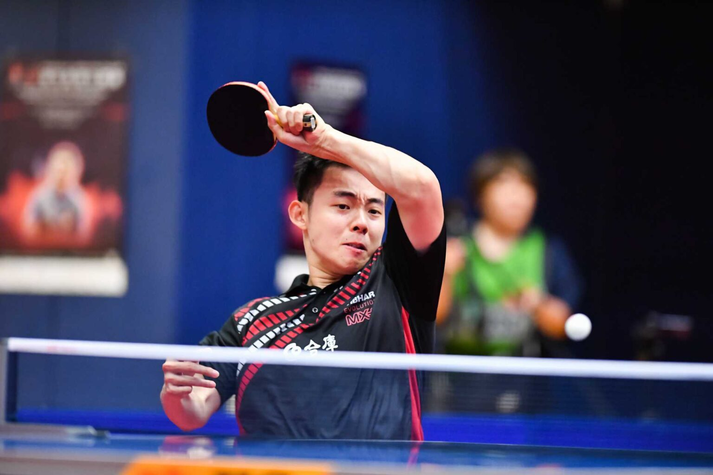

Masa tenisi sporu, sert, düz, ve genellikle yeşil ya da mavi renkte olan, uzunluğu 274 cm, genişliği ise 152 cm boyutlarında yapılan, geometrik şekli dikdörtgen biçiminde ve de yerden 76 cm yüksekliğinde ayarlanmış ve özelleştirilmiş bir masada oynanır. Oyunun doğasında hızın var olması sebebiyle, sporcular geniş ve rahat bir alana ihtiyaç duymaktadırlar. Bundan dolayı masa tenisi şampiyonalarında, her masa için eni en az 6 metrelik, boyu ise en az 12 metrelik bir alan sağlanır. Görme durumunda sıkıntı yaşanmaması için de, masa çok iyi bir şekilde aydınlatılır. *Masanın uzun kenarlarının ortalarını birleştirecek şekilde gerilen ağ, 15 cm yüksekliğindedir ve masadan çok az daha geniş boyutlardadır. *Beyaz renkli selüloit veya plastik malzemeden yapılmış içi boş topun çapı, 38 mm’dir. Bu topun ağırlığı ise yaklaşık 2,5 gramdır. *Genel olarak tahtadan yapılan raketlerin üzeri pütürlü kauçuk ya da plastik kaplı yapıdadır.
Genel olarak masa tenisi oyun kuralları, tenis oyun kurallarıyla birçok benzerlik gösterir. Raket aracılığıyla vurulan top, saha dışına çıkmamak suretiyle, ağın iki yanı arasında gidip gelir. Önceden belirlenmek koşuluyla, üç ya da beş set olarak oynanan oyun, servisle başlar. Kendi sahasına gelerek en fazla bir kez zıplayan topa raketiyle vuran oyuncu, topu rakip sahaya göndermeye çalışır. Bunu kurallar çerçevesinde başaramayan oyuncunun rakibi, bir sayı kazanır. Her sayıdan sonra, oyuna tekrar başlamak için servis atılır. Toplam beş sayıda bir, servis atan taraf değişir. Yine toplamda 21 sayı kazanan taraf, seti de kazanır. Ancak, set sonuna doğru 20-20’lik beraberlik yakalanırsa, bu aşamadan sonra servis her sayıda değişir ve rakibine iki sayı fark atan taraf seti kazanır. Oyuncular servis atarken, açık avuçla havaya attıkları topa raketle vurmak zorundadırlar. Sadece servis atarken, top servisi atanın sahasında bir kere zıplayarak rakip sahaya gitmelidir. Çiftler karşılaşması olarak adlandırılan, her iki tarafta da ikişer oyuncunun yer aldığı maçlarda, servis atışını her zaman masanın sağ yarısındaki oyuncular gerçekleştirirler. Top, çapraz şekilde karşı sahanın sağ yarısına gelecek şekilde atılır. Eşler, sırasıyla değişerek servis kullanırlar.
Masa tenisinde kullanılan falsolu vuruş tekniği, teniste kullanılan türevi vuruşlardan çok daha önemlidir. Bu tip vuruş tarzlarının etkileri ve avantajların dezavantajlara dönüşebileceği durumundan dolayı, masa tenisi oyuncularına tenis oynamamaları salık verilir. Buna ek olarak, masa tenisinde bilekten hareketler ön planda iken, teniste kol ve omuz odaklı vuruş tekniklerinin olması da, bir başka farklılık noktasıdır ve kimi zaman bu iki sporu birlikte yapmaya engeldir. Tüm bunlara rağmen, 18 yaşındayken Dünya Masa Tenisi Şampiyonu olup, aynı zamanda döneminin en büyük tenis oyuncusu olan Fred Perry gibi, her iki spor dalında da başarılı oyuncular yetişmiştir. En çok tanınan ve ünü bütün dünyaya yayılan masa tenisi oyuncularından birisi, beş yıl süresince Macaristan için Dünya Şampiyonluğu’nu kazandıktan sonra, başka bir Dünya Şampiyonası’na İngiltere adına katılmış olan Victor Barna’dır.